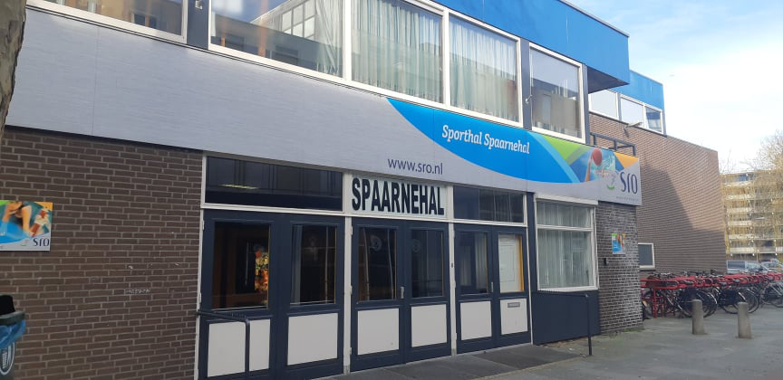
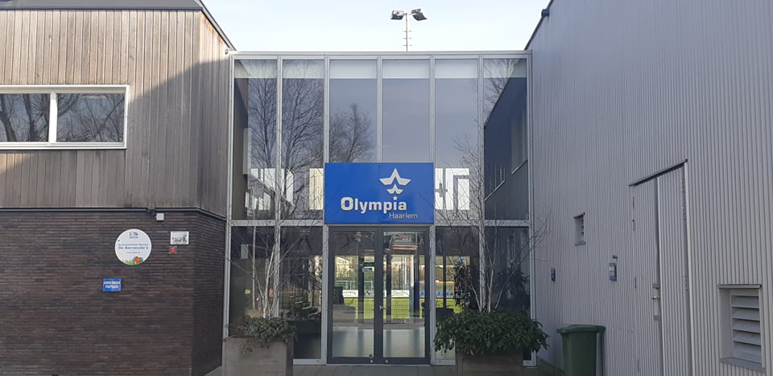
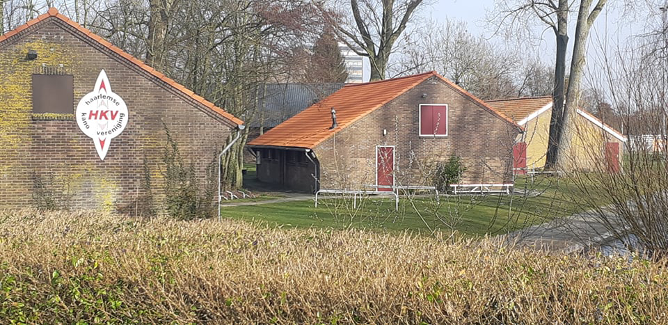
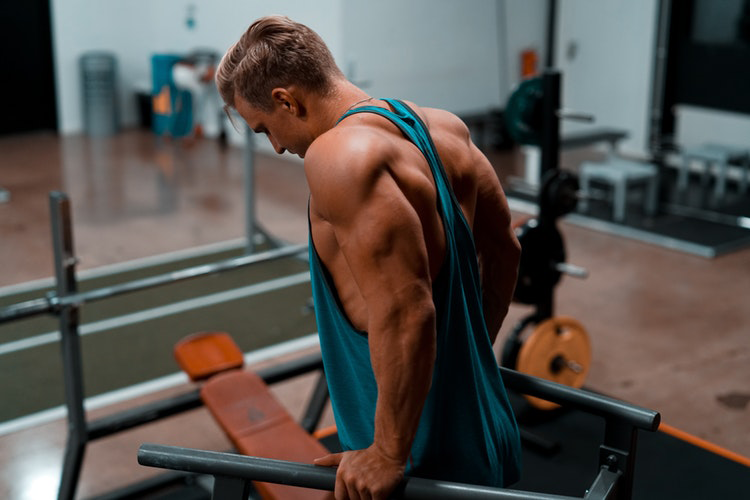
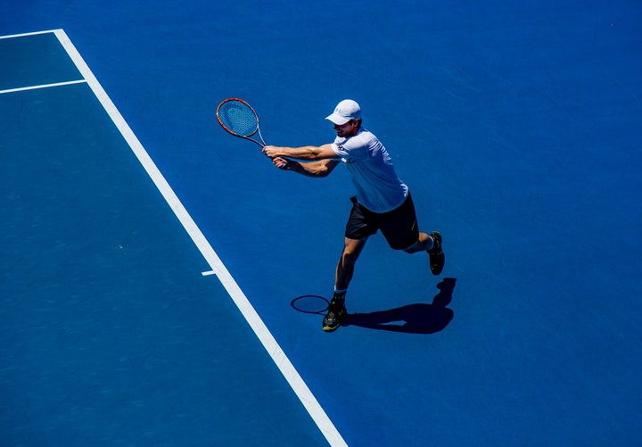
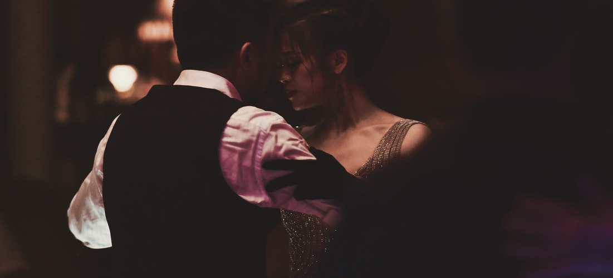
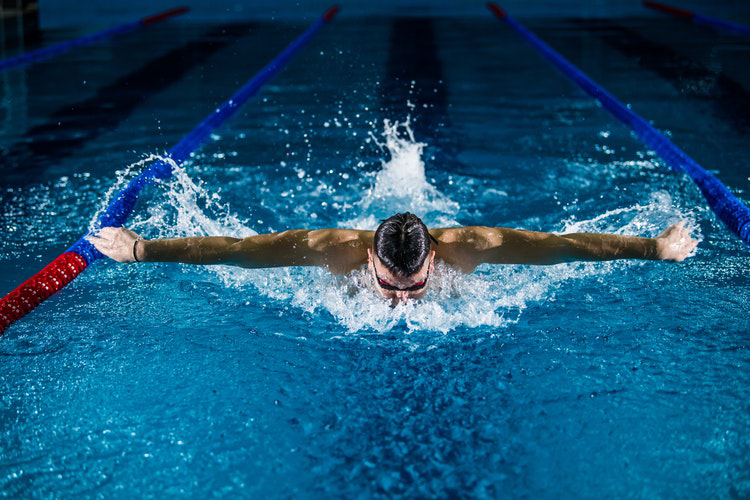
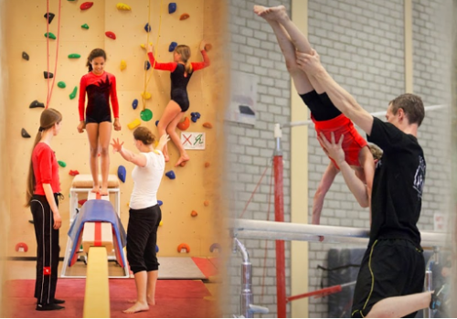
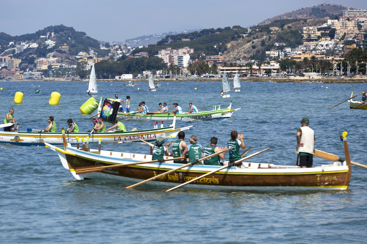
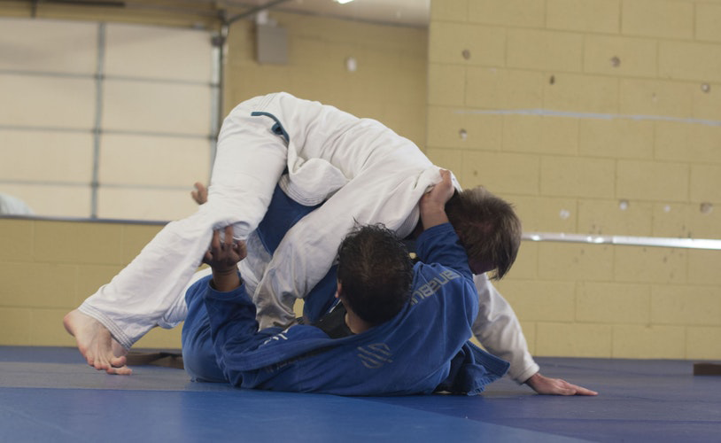

-
Sporthal Spaarnehal
De populairste sporthal in europawijk, hier kun je langs om te leren volleyballen, korfballen en zaalvoetballen. Er worden hier ook nog vaak toernooien georganiseerd en wie weet speel jij in het volgende toernooi!
 -
Voetballen bij Olympia Haarlem
Heb je altijd willen leren voetballen zoals de echte profvoetballers op TV. Grijp dan nu je kans, bij Olympia Haarlem zul je in een rap van tempo het spel leren.
 -
Kanoën bij de Haarlemse Kanovereniging(HKV)
Bij de HKV zijn er diverse kanodisciplines die vertegenwoordigd worden zoals toervaren, zeevaren en marathon afstanden. het HKV is een gezellige club voor mensen die meer van watersport houden.
 -
Fitnessen in de Fit for free
Fitness is niet alleen voor bodybuilders, het zou voor ons allemaal wel goed zijn om eens in de week te sporten. Bij de fit free kunt u gebruik maken van allerlei apparaten om te fitnessen. Dus leg die donut neer en ga gauw fitnessen en misschien heeft u deze zomer wel een wasbord om trots op te zijn.
 -
Tennis overhout
Als er een sport is die uitblinkt is het wel tennis, een van de leukste competitieve sporten die er zijn. Bij overhout kunt u zowel tennissen als squashen, een echte aanrader!
 -
DansNkafe Argentijns dansen
denk jij dat je kunt dansen? Ik ook niet. Maar als je jezelf inschrijft bij DansNkafe zou dit weliswaar kunnen veranderen. Ze leren je hier een specifieke vorm van de Tango, de argentijnse tango.
 -
Wedstrijdzwemmen boerhavebad
Zwemmen is een van de gezondste sporten die er zijn, bij het zwemmen gebruik je zo wat al je spieren. En het mooie is het enige wat je nodig hebt is wat water en zwemkleding en je kunt van start. Leer nu wedstrijdzwemmen en wordt een echte spartelaar.
 -
Sportclub HLC
Of je nou zin hebt om te gaan turnen, klimmen of acrobatiek les te volgen : de sportclub HLC heeft het allemaal. Als je niet kunt kiezen, kun je ze net zo goed allemaal proberen !
 -
Roeivereniging Amphitrite
Als je echt fit wilt worden kun je het allerbeste gaan roeien, dit is een zware sport maar kent ook zijn leuke momenten. bij amphitrite zul je naast het roeien ook veel mensen leren kennen met name studenten.
 -
Braziliaanse Jiu Jitsu
wil jij een echte krachtpatser worden, jezelf kunnen verdedigen of die wrede bullebak op school aanpakken? Braziliaanse Jiu jitsu is een van de meest uidagende vechtsporten om te leren beheersen en ook een zeer effectieve vechtsport. Bij Hwa rang dragon bent u in goede handen, zij leren u de kern van de sport vanaf de basis.
